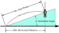

trajectory

Definition: A trajectory or flight path is the path that an object with mass in motion follows through space as a function of time. In classical mechanics, a trajectory is defined by Hamiltonian mechanics via canonical coordinates; hence, a complete trajectory is defined by position and momentum, simultaneously.
Source: Wikipedia
Wikipedia Page
Wikidata Page